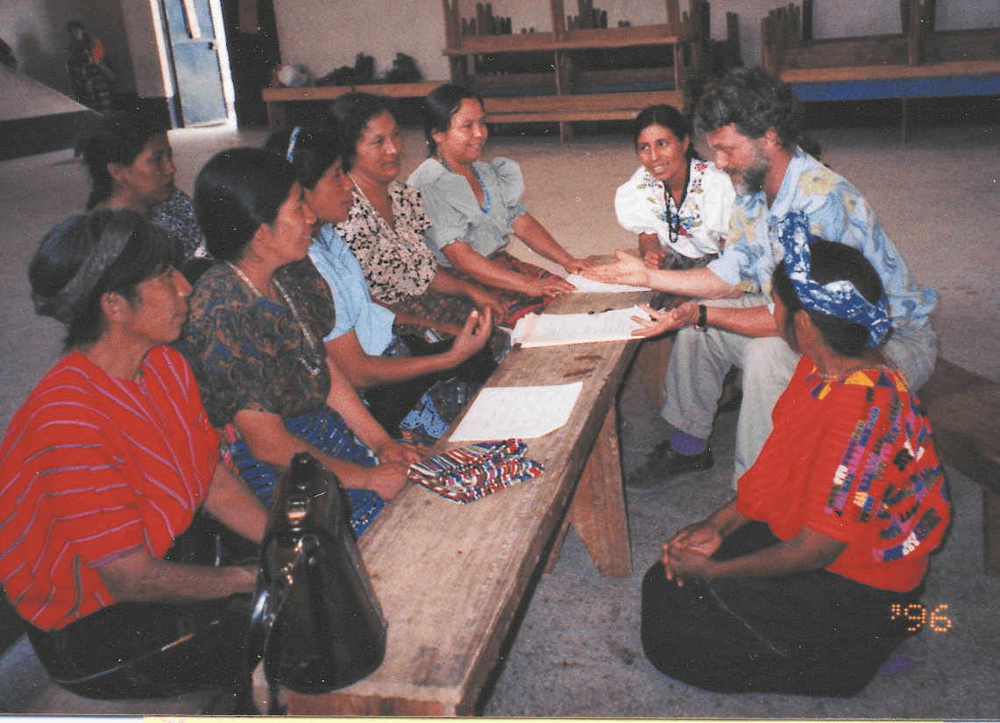
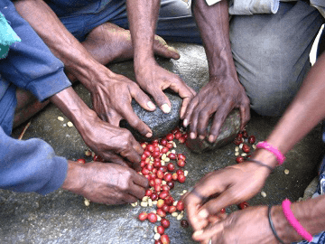

Green Coffee
Speciality Coffee as a vehicle for positive change
Come enjoy both robust and delicate flavors of high-quality organic coffee by the cup or in bulk. We are proud to sell products that are environmentally sustainable and socially conscious!
Green Coffee Beans
- High Level of Antioxidans
- Metabolism Boosters
- Powerful Appetite Suppressant
- Enhanced Energy Levels
- Lowers Blood Sugar
- Lower Cholesterol

What More Can Green Coffee Bean Extract Offer?
Read About

Side Effects in Green Coffee Bean Extract
Read About

OUR WORK AT HOME AND ABROAD
For over two decades our mission has been clear: To use high quality specialty coffee as a vehicle for progressive change throughout the coffeelands of Asia, Africa and the Americas. We do this through activism, ecological responsibility and innovative
direct development programs with our cooperative partners.
All Organic, Fair Trade and Kosher - Respect for the Quality of Life
All of our fine whole bean specialty coffees are certified organic, fair trade, and kosher, and are roasted in small batches at our beanery in Orange, MA. We know that the planting, care, harvesting and processing of the
beans is done in conformity with international standards for the health of the farmer and their environment, as well as the high quality of the bean. The vast use of pesticides in coffee production has serious impact on the ecology of
the coffee-growing world and the health of farm communities. Our commitment to only purchase shade grown coffees supports healthy environments for coffee growers and protects critical migratory bird habitat. It is important to us that
the quality of our coffees includes respect for the quality of life of our southern partners in the coffee world. And that respect translates into superb tasting coffee for your pleasure.

Green Beans Represents an Integrated, Progressive Trade System.
Each player in our cycle of production and distribution, from the farmer to the consumer, participates in socially just and environmentally responsible trade. We hope that all other coffee companies will follow our lead. We only purchase beans from small
farmer cooperatives, largely made up of indigenous peoples working hard to maintain their culture and lifestyles